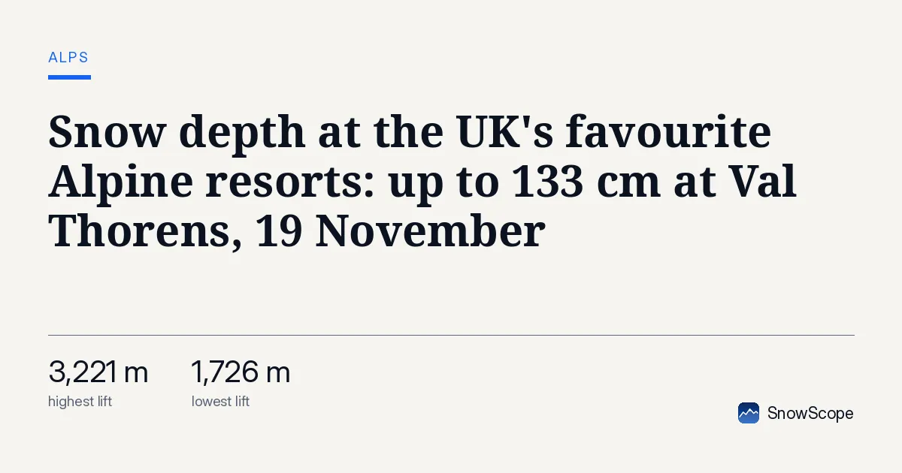
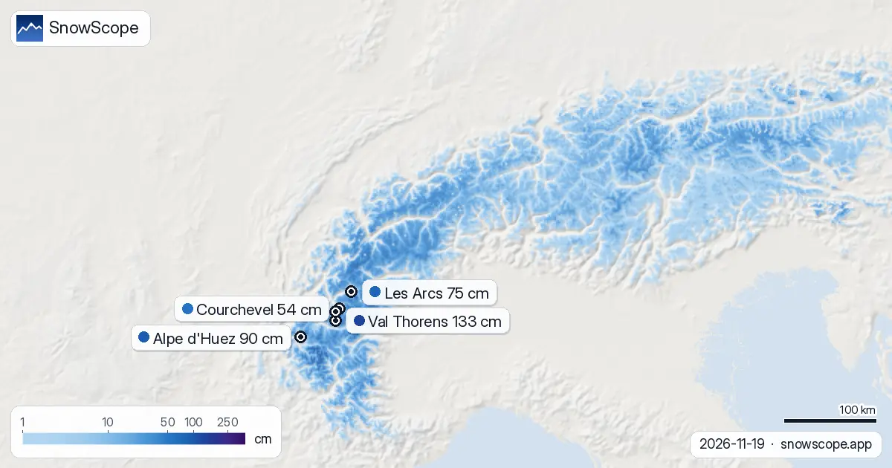

Snow depth at the UK's favourite Alpine resorts: up to 133 cm at Val Thorens, 19 November
Val Thorens sits well ahead with 133 cm of snow on its upper slopes on 19 November. Heavy falls across the past three days mean all 12 resorts tracked here are skiable, though depths vary widely from 49 cm to 133 cm.
See the live snow forecast for Val Thorens in the SnowScope appSnow depth, powder alerts and the 3D map, free.
Where the snow sits deepest
Val Thorens leads by a clear margin at 133 cm. Alpe d'Huez follows at 90 cm, then Les Arcs at 75 cm. The middle cluster—Courchevel, Méribel and Tignes—all report 54 cm. At the lower end, La Plagne has 50 cm and Chamonix 49 cm.
Upper slopes at all these resorts sit above 2,400 m, which helps them hold snow early in the season. Val Thorens and Alpe d'Huez both top 3,200 m, giving them the best defense against thaw.
| Resort | Snow depth | New snow, 72 h | Coming, next days | Top |
|---|---|---|---|---|
| Val Thorens | 133 cm | 123 cm | 103 cm | 3,221 m |
| Alpe d'Huez | 90 cm | 92 cm | 105 cm | 3,306 m |
| Les Arcs | 75 cm | 107 cm | 87 cm | 3,205 m |
| Courchevel | 54 cm | 92 cm | 87 cm | 2,695 m |
| Méribel | 54 cm | 92 cm | 87 cm | 2,920 m |
| Tignes | 54 cm | 87 cm | 66 cm | 3,447 m |

Three days of heavy falls
Val Thorens received 123 cm of fresh snow in the 72 hours to 19 November—by far the largest dump. Les Arcs picked up 107 cm and La Plagne 95 cm. Even the lower resorts saw significant falls: Courchevel, Méribel and Alpe d'Huez each gained 92 cm.
This fresh layer sits on a thin early-season base. Where rocks poke through, they are now buried, but south-facing lower slopes may still be patchy. The new snow will make a real difference to the ride on steep runs and in the trees.
What is coming next
By 22 November, the range expects more snow to fall. Alpe d'Huez is forecast to gain 105 cm, Val Thorens 103 cm and Courchevel 87 cm. These are significant totals and will push depths higher across the board.
Tignes will see only 66 cm more, suggesting the heaviest snow will stay in the northern and central sectors of the Alps during this spell.
Which height matters most right now
Early-season snow is thin at mid-mountain. Val Thorens reaches 3,221 m at its top lift; Alpe d'Huez climbs to 3,306 m. These higher ridges have the best guarantee of continuous cover. If you are heading to a lower resort like Chamonix (top 2,486 m), stick to the highest runs or aim for north-facing slopes where the snow lasts longer.
The forecast for extra fresh powder will help lower altitudes too. After 22 November, even the smaller resorts should feel softer underfoot.
Trip planning: where to go now
Val Thorens offers the deepest snow and the most powder in the forecast: 133 cm today and 103 cm more by 22 November. If you are heading out in the next few days, it is the safest bet for unbroken runs. Les Arcs and Alpe d'Huez are close behind and also worth considering if you prefer their terrain.
Flying into Geneva, Lyon or Salzburg gives you access to all these resorts within two to three hours' drive. Book flights sooner rather than later: the forecast snow will draw crowds.
Off-piste and safety
With 123 cm of new snow at Val Thorens and over 90 cm elsewhere, the first descents off the piste will feel soft and responsive. Early-season snow sits on a shallow base, however, and hidden rocks remain a hazard even with this fresh cover.
Before you leave the groomed slopes, check the local avalanche bulletin and ski only terrain you know well. Fresh snow bonds poorly to old, thin bases, so stability can be patchy. Stick to familiar slopes and consider hiring a guide if you want to explore further afield.
Tips for skiers
- Val Thorens and Alpe d'Huez have the deepest, most reliable snow; head high and north-facing if you pick a lower resort.
- New snow in the forecast will add 100 cm or more by 22 November—plan your trip for mid-to-late next week if you can.
- Check the avalanche bulletin before any off-piste skiing; fresh snow on a thin base is unstable.
- Verify which lifts are open before you drive; some may still be closed on the first full weekend of the season.
- Early-season rock hazards remain real despite the fresh powder; stay on slopes you know and avoid new terrain until the base thickens.
About these numbers
Resort snow depths are the deepest snow on the resort's upper slopes on the date shown; they are estimates for an area, not a measurement at one point. Forecasts can change. Always read the official avalanche bulletin before going off-piste.
Cite this report
For research, teaching or the press: the numbers and charts are free to reuse under CC BY 4.0 with this citation.
SnowScope (2026), Snow depth at the UK's favourite Alpine resorts: up to 133 cm at Val Thorens, 19 November, https://snowscope.app/blog/en/2026/11/uk-favourite-alps-resorts-snow-19-november-2026.html, accessed 2026-11-19
SnowScope (Atlas Labs). (2026, November 19). Snow depth at the UK's favourite Alpine resorts: up to 133 cm at Val Thorens, 19 November. SnowScope snow reports. https://snowscope.app/blog/en/2026/11/uk-favourite-alps-resorts-snow-19-november-2026.html
BibTeX
@misc{snowscope2026ukfavouritealpsresortssn,
author = {{SnowScope (Atlas Labs)}},
title = {Snow depth at the UK's favourite Alpine resorts: up to 133 cm at Val Thorens, 19 November},
year = {2026},
month = nov,
howpublished = {\url{https://snowscope.app/blog/en/2026/11/uk-favourite-alps-resorts-snow-19-november-2026.html}},
note = {Published 2026-11-19 11:42 UTC; accessed 2026-11-19}
}· CC BY 4.0 · Methods, data and tools →
Val Thorens: snow and temperature by height, this winter vs last (tools) →
Follow Val Thorens
Free: a message when fresh snow is coming, and the forecast every morning.
More snow reports

Tignes climbs from 1559 m to 3447 m across 46 past winters. Base: 117 cm peak. Mid-mountain: 216 cm. Glacier: 372 cm. Data from November 2026.

Méribel's upper slopes collect 28 cm next week (23–29 Nov); most falls Wed–Thu and Sun. Data from 16 Nov.

La Plagne's upper slopes forecast 28 cm of fresh snow next week (23–29 Nov), building on 99 cm from earlier. Data from 16 November 2026.